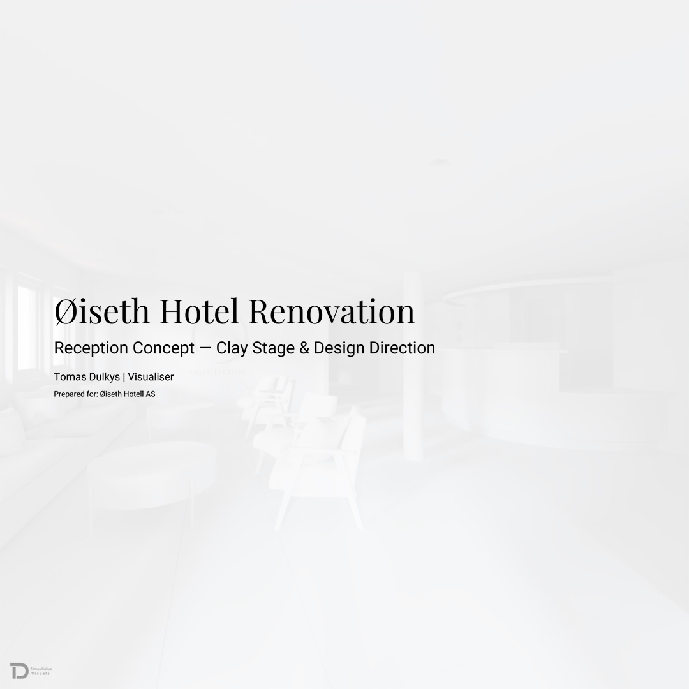
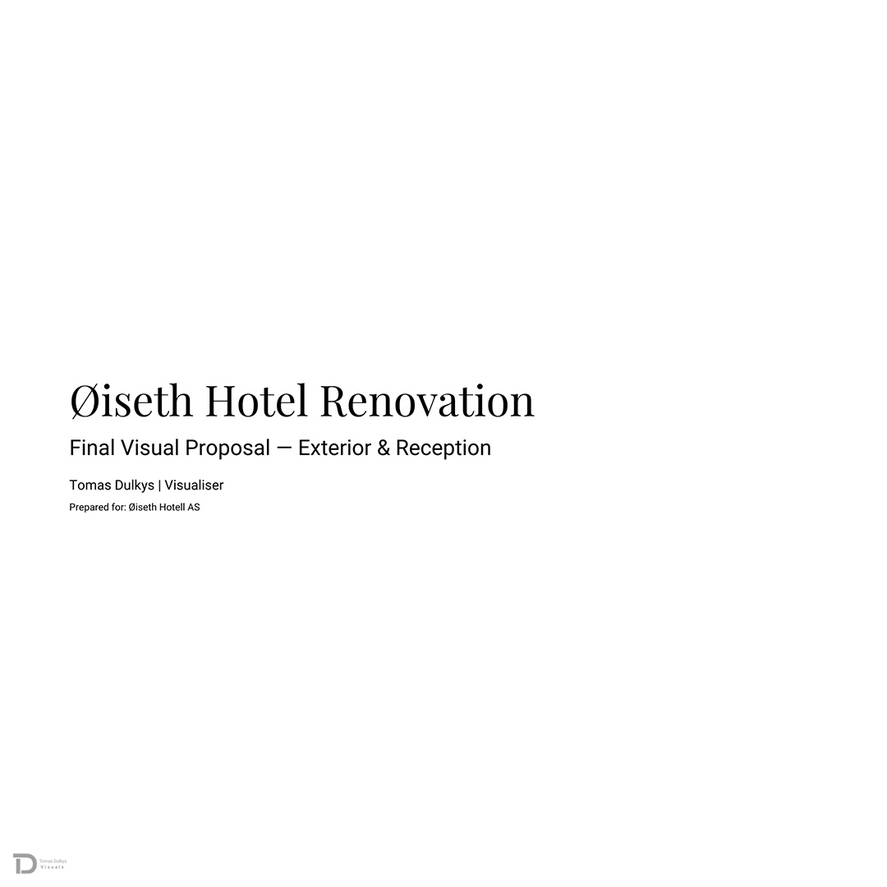

Aim
To apply advanced visualisation techniques within a real client project, while critically reflecting on professional practice, sustainability, ethics, and responsible design decision-making.
Placement-based architectural visualisation project using a real client context to develop, document, and critically evaluate a circular renovation concept across professional media outputs.
This placement project focuses on producing a professional architectural visualisation proposal for Øiseth Hotel in Åkrestrømmen, Norway. The aim is to develop clear design concepts for the exterior cladding and the reception area, using advanced 3D modelling, material research, circulation analysis, and sustainable design strategies. The project is structured as a simulated freelance commission, allowing me to apply industry‑standard workflows, communicate with a real client, and translate design intentions into visual outcomes that support decision‑making.
Øiseth Hotel is located in a rural forested landscape beside the river, giving it strong potential for a nature‑connected guest experience. The building has not been renovated for many years, and the owners expressed interest in exploring how the hotel could be refreshed. At this stage, the project is exploratory: the goal is to create visual material that helps the owners understand possible directions before any renovation decisions are made.
Because the hotel does not have original CAD drawings, the design process required close collaboration with one of the owners, who provided measurements through video calls and on‑site checks. This created a realistic professional scenario where communication, verification, and problem‑solving became essential parts of the workflow. My role in this placement is to visualise potential design solutions, helping the owners see how the hotel could evolve and how different ideas might look in practice.
For this module, I selected a real client project as my placement experience to apply and extend the methods learned throughout my degree. The aim was to work through a complete architectural visualisation workflow—from research and concept development to modelling, lighting, rendering, and presentation—while responding to a genuine design brief. This project allowed me to practise professional communication, interpret client feedback, and refine ideas through iterative development. It also provided a platform to explore sustainability, ethical material choices, and SDG 12 in relation to my own design decisions.
To keep the project realistic within the module timeframe, the client and I agreed to focus on two priority areas:
This scope allowed for depth, clarity, and meaningful development without overextending the project.

The project aligns with UN Sustainable Development Goal 12: Responsible Consumption and Production. The design approach prioritises:
Together, these strategies support environmental responsibility, reduce embodied carbon, and strengthen the hotel’s connection to local industry and Norwegian natural resources.
Øiseth Hotel is located in Åkrestrømmen, a small village in eastern Norway, surrounded by forest and situated close to the river Mistra. The hotel operates within a rural context where landscape, climate, and local industry strongly influence building character and visitor expectations.
The region experiences long winter periods with limited daylight, which directly affects interior comfort requirements. As a result, lighting strategy and material reflectivity were considered functional design factors rather than decorative elements.
Contemporary Norwegian and Scandinavian renovation practices show a tendency to prioritise reuse of existing structures and material retention over full replacement. Studies of renovation and transformation projects reveal that applying reuse strategies is a key method for reducing environmental impact and aligning with circular economy principles (Støre‑Valen 2024).
A key constraint of the project was the absence of architectural CAD drawings. The hotel owners confirmed that no measured plans were available, and the only documentation provided consisted of infrastructure drawings. These were useful for understanding general layout and technical systems, but they were not intended to function as accurate architectural floor plans.
This limitation introduced a realistic professional challenge commonly encountered in renovation projects, particularly in older or rural buildings. Accurate spatial understanding became essential, as the project involved circulation analysis, reception‑desk ergonomics, and accessibility considerations. Without verified drawings, dimensional assumptions carried a higher risk of error and required careful verification throughout the design process.
Additional complexity arose from the building’s internal conditions, which were not represented in the infrastructure drawings. These drawings provided only top‑view information, meaning ceiling heights and floor‑level changes were not documented. In reality, the reception area has varying ceiling heights, with a lower central zone and higher perimeter edges, and the corridor to the guest rooms drops approximately 320 mm from the reception level. These vertical differences strongly influence spatial perception, lighting behaviour, and furniture placement, and therefore required careful consideration during the design process.
The project was also developed remotely, with the site located in Norway and the design work undertaken in the UK. Dimensional verification therefore relied on video calls and client‑assisted measurements, which had to be scheduled around the owner’s availability. This reinforced the need for clear communication and professional judgement during the design process.
Research into contemporary Norwegian architectural practice revealed a strong focus on retrofitting rather than replacement. Many renovation projects prioritise retaining existing structures, upgrading performance, and reducing material waste.
KA13 (Kristian Augusts Gate 13) in Oslo by Mad Arkitekter is a key precedent for circular construction. The project preserves a 1950s building and reuses approximately 80% of materials from both the original structure and nearby demolition sites, demonstrating how reuse can significantly reduce embodied carbon and extend a building’s lifespan (Mad Arkitekter, 2021).
Powerhouse Kjørbo by Snøhetta provides a complementary precedent, showing how deep renovation strategies can transform existing buildings into high‑performance, energy‑positive structures. The project illustrates that upgrading and reusing existing buildings can be both environmentally and economically viable (Snøhetta, n.d.).
Together, these precedents informed the strategic direction of the Øiseth Hotel proposal. Rather than removing existing cladding, the project adopts an additive approach by introducing a breathable timber layer that functions as a ventilated rain‑screen, improving thermal performance and protecting the existing structure while integrating the building more closely with its forest context.
Research into Norwegian architectural practice highlights a consistent emphasis on retrofitting rather than replacement. Timber plays a central role within this context due to its renewable properties, cultural significance, and its ability to store biogenic carbon over long periods. International studies show that timber products act as durable carbon sinks, and that adding new timber elements to existing buildings can increase stored carbon while avoiding the emissions associated with demolition (World of Wood Festival, 2021).
To support SDG 12, the project prioritises hyper‑local sourcing. The proposed exterior timber cladding is supplied by Moelven Østerdalsbruket in Koppang, a regional sawmill located close to Åkrestrømmen. Sourcing materials from nearby producers reduces transportation emissions and strengthens local industry (Moelven, 2024).
Inside the reception, a preserved moss feature wall is introduced within the seating area. This element provides a biophilic focal point and reflects Åkrestrømmen’s local moss‑production industry (Norske Moseprodukter AS, 2026). Because the moss is preserved, it requires minimal maintenance while contributing to a distinct interior identity that reinforces the hotel’s connection to its surroundings.
For flooring, Norwegian anorthosite was selected due to its exceptional density, durability, and long lifecycle. Formed nearly one billion years ago in Sirevaag, the stone’s slow‑cooling geological process creates a highly resilient material suitable for both indoor and outdoor applications. Its robustness reduces the need for replacement and supports long‑term resource efficiency, aligning with responsible consumption principles (Lundhs Real Stone, 2025).
The primary objective was to generate high-fidelity visual concepts that allow the client to explore renovation possibilities prior to capital investment. The brief focused on revitalizing the hotel’s identity by addressing the "outdated" perception of the exterior and the public reception area. The goal was to produce visual material that prioritizes clarity and realism, ensuring any design direction remains grounded in the building’s specific Norwegian context.
The project was structured around four key goals: developing realistic visual proposals for the facade and reception; enhancing the guest arrival experience through spatial clarity; applying a responsible material palette; and delivering staged visual outputs that facilitate professional client decision-making. By refining the scope to these high-impact zones, the project ensures a higher level of detail and material exploration.

The project began without any architectural CAD drawings for Øiseth Hotel, as the original plans had been lost over time. The client provided a set of infrastructure drawings, which outlined the overall layout and building systems and therefore formed the starting point for preparing the base plan.
These drawings offered a reliable indication of the building’s general organisation, but certain spatial details—such as ceiling height transitions and level changes—were not fully represented. This made it necessary to verify specific dimensions during later stages of the workflow.
The first step was to test whether the infrastructure drawings could be converted into a usable base plan through digital tracing. The plan was imported into Inkscape and traced to generate vector linework (Figure 4.2a). When this traced geometry was brought into Blender (Figure 4.2b), it revealed several issues: irregular curves, overlapping nodes, and unstable edges made the model difficult to work with, particularly given the size and complexity of the hotel.
To establish a working base, the infrastructure drawing was first scaled using a standard 900 mm door width (Figure 4.3a), previously confirmed by the client. The entrance, reception area, and main corridor were then manually redrawn to test whether the scaled plan aligned with the real building (Figure 4.3b). During this process, the proportions of the reception space appeared inconsistent with previous site experience, particularly the length of the reception window wall and the main focal wall.
To establish a working base, the infrastructure drawing was first scaled using a standard 900 mm door width, previously confirmed by the client. The entrance, reception area, and main corridor were then manually redrawn to test whether the scaled plan aligned with the real building. During this process, the proportions of the reception space appeared inconsistent with previous site experience, particularly the length of the reception window wall and the main focal wall.
Following this discovery, the workflow shifted to direct measurement. A series of short online meetings was organised, during which the owner measured specific walls, ceiling heights, and level changes on request, while these values were recorded through annotated sketches. Because the owner’s schedule was limited and the hotel is relatively large, this verification process took place over multiple sessions.
This approach provided the dimensions needed to complete an accurate base plan, including the varying ceiling heights in the reception area—approximately 2.04 m at the lowest point rising to about 2.48 m at the sides—and the floor level drop of roughly 32 cm from the reception into the corridor leading to the guest rooms. With these verified dimensions, the base plan could be completed accurately and used confidently for the modelling stage.
This section documents the development of the proposed exterior and reception design for Øiseth Hotel. Design decisions were informed by verified site information, client requirements, and spatial testing, with the aim of producing clear, realistic visual proposals that support early-stage decision-making.
Øiseth Hotel has operated successfully in Åkrestrømmen for many years, but the owners identified that parts of the exterior no longer express the level of comfort and care they want guests to experience. Over time, the hotel has received feedback suggesting that the building feels “older” than the atmosphere the owners aim to offer, prompting an early-stage exploration of renovation options.
Rather than treating the exterior as a problem to be replaced, the initial assessment focused on where a targeted upgrade could make the biggest visual and experiential difference. The main area highlighted by the client was the upper band of cladding, previously finished in a strong red tone. This element currently reads as the most visually dominant feature on approach, and it became the key focus for testing a new direction.
At this concept stage, the goal was to propose an exterior update that:
Based on initial site assessment and research into Norwegian renovation precedents, the exterior strategy focused on upgrading the most visually dominant part of the façade rather than replacing the entire building envelope.
The proposal retains the existing upper cladding as a base layer, addressing any necessary repairs before repainting it in a muted charcoal tone. This establishes a calmer background and reduces visual contrast with the surrounding landscape. To build on this, a series of slender vertical timber elements is introduced in front of the upper band. These timber strips are spaced with intentional gaps, allowing the original surface to remain visible while adding depth, rhythm, and material warmth.
This layered approach serves multiple purposes:
This strategy was intentionally developed as a cost-aware and adaptable first step toward renovation. By focusing on selective upgrade rather than full replacement, the proposal offers the client a realistic way to test a new architectural direction, improve guest perception, and plan future phases without committing to large-scale demolition at an early stage.
The material and colour strategy was developed to support the retrofit approach and create a coherent exterior identity. A restrained palette was selected to update the building without introducing strong contrast.
The upper façade uses a muted charcoal tone with vertical timber elements. This combination provides depth while keeping the timber as the main visual feature. For the main wall surfaces, a pale ash finish establishes a calm base and balances the darker upper band.
Material choices prioritised durability and maintenance. Timber was selected for its natural weathering behaviour and compatibility with the forest context, while painted surfaces act as renewals rather than replacements, supporting a consistent and manageable exterior.
Overall, the palette unifies the building through subtle contrast and ensures the renovation remains visually controlled and contextually appropriate.
The client identified the reception as the first area requiring improvement, focusing on atmosphere, functionality, and the overall arrival experience. He expressed dissatisfaction with the existing reception desk and the carpeted floor, noting that the space did not feel welcoming or visually coherent. He also emphasised the need for improved lighting and a brighter interior, reflecting the importance of light quality during Norway’s long winter months.
The client requested a natural, earth‑toned palette that would connect the interior to the surrounding landscape and create a calm, grounded atmosphere. This direction aligns with the project’s research into nature‑based materials, biophilic elements, and the use of muted tones to support comfort and visual clarity in hospitality environments.
A key idea proposed by the client was the introduction of a moss feature wall on the main wall visible from the entrance. Positioned beside the seating area, this wall would become the primary focal point on arrival. The use of preserved moss supports a nature‑connected interior and reflects Åkrestrømmen’s local moss‑production industry, offering a direct link between the hotel’s identity and its regional context.
These requirements established the foundation for reorganising the reception layout, addressing functional limitations of the existing desk, and developing a clearer spatial identity—leading directly into the assessment of current reception issues.
The existing reception layout consisted of a functional workspace measuring 2.05 m × 1.65 m, attached to a narrow strip of 2.54 m × 0.84 m. This strip was too shallow to support circulation, storage, or equipment, and had gradually become a place where unused items accumulated. Because this area was partially visible to guests, it contributed to visual clutter and reduced the perceived quality of the arrival experience.
The client expressed a clear desire to remove this non-functional corner, improve openness, and create a more welcoming first impression. The existing counter height of approximately 1.20 m also limited accessibility for wheelchair users. Inclusive design guidance for reception and service areas recommends that public-facing counters include a lowered section or an alternative work surface that accommodates seated users, typically around 750–800 mm (Universal Design Recommendations for Accessible Reception/Service Areas). As a result, the existing desk configuration did not align with recognised universal design best practice.
These spatial and functional limitations formed the basis for the redesign and guided the subsequent testing of alternative desk configurations.
A 2.6 m diameter circular desk was tested with approximately 1.8 m of guest circulation around its perimeter. This external clearance worked well and provided a visually open and welcoming approach for visitors. However, the internal working zone created by the circular geometry offered only around 1.3 m of usable depth. This was not sufficient for two staff members, who occasionally work simultaneously at the reception, nor for moments when a third person needs temporary access.
Ergonomic guidance emphasises that staff require adequate clearance behind chairs to sit, stand, and move without obstruction. Published workstation standards indicate that dynamic chair‑movement zones typically require 61–91cm to allow unrestricted movement (Dimensions.com 2025). When two staff members are positioned opposite each other, their combined movement needs exceed the 1.3m available inside the circular desk. This would result in overlapping chair positions, restricted circulation, and reduced operational comfort for staff.
Although the circular form offered a welcoming appearance and adequate guest circulation, it did not provide the internal working depth needed for efficient, inclusive, and comfortable staff use. For this reason, the fully circular configuration was not selected.
The final proposal retains the reception in its original position rather than relocating it to the centre of the lobby. The narrow 2.54 m × 0.84 m strip and the adjacent mini wall were removed, opening the reception zone from both sides and improving visibility and circulation. This reorganisation also created a clearer approach path for guests and increased accessibility on the right‑hand side.
A half-circular reception desk was introduced, extending the usable staff length from 1.65 m to approximately 2.65 m. The curved ends of the desk sit outside the internal working zone, preventing crowding and maintaining ergonomic comfort. The right-hand side incorporates a lowered counter at approximately 760 mm, aligning with inclusive design guidance for reception and service areas and ensuring equal access for wheelchair users (Universal Design Recommendations for Accessible Reception/Service Areas).
This configuration resolves previous circulation bottlenecks, removes visual clutter, and provides a more inclusive and efficient reception environment that aligns with both client priorities and universal design standards.
Additional interior elements were introduced to strengthen spatial coherence and enhance the reception’s sense of identity. The existing square column in the centre of the space appeared visually thin and out of proportion, giving it an uncertain structural presence. It was therefore redesigned as a round timber column, providing a more robust and legible form that aligns with the material language of the interior.
A graphic wall element was also added behind the reception seating area to reinforce a sense of place. Using abstract forms inspired by the surrounding landscape, the graphic introduces a subtle layer of identity and supports orientation within the space. Positioned within the seating zone, it contributes to a more grounded and contextually connected arrival experience.
Sustainability was treated as a design framework rather than an added feature. The project aligns with UN SDG 12 by prioritising responsible consumption, material longevity, and waste reduction. Because this is a renovation rather than a new build, the strategy focused on retaining and upgrading existing elements instead of replacing them. This approach reflects established Norwegian renovation practice, where retrofitting is recognised as an effective method for reducing environmental impact and preserving embodied carbon (Mad Arkitekter, KA13 Experience Report, 2023).
The decision to retain the existing exterior cladding and introduce a new ventilated timber layer aligns with contemporary Norwegian retrofit strategies that prioritise reuse over demolition. A ventilated timber rain-screen extends the building’s lifespan, protects the original envelope, and supports circular construction principles (SirkTre, 2024). Comparable approaches can be seen in Norwegian precedents such as Helen & Hard’s renovation of Sverdrupsgate 27 (Innoasis), where new timber structures were integrated into an existing concrete building to reduce demolition waste and support a lower-impact renovation approach (ArchDaily on Innoasis – Helen & Hard, 2023).
Material choices inside the reception follow the same principle. The preserved moss wall from Norske Moseprodukter AS introduces a biophilic element with minimal maintenance, while Anorthosite flooring provides long‑term durability due to its exceptional hardness and lifespan exceeding 100 years (Lundhs Real Stone 2025). These decisions reduce replacement cycles and support responsible resource use.
To support SDG 12, the project prioritised hyper‑local sourcing and circular material flows. Timber cladding is proposed from Moelven Østerdalsbruket in Koppang, reducing transportation emissions and strengthening regional industry (Moelven 2024 ). The moss wall reflects Åkrestrømmen’s local production, reinforcing the building’s connection to its context. Together, these materials create a renovation that functions as a local resource depot rather than a source of waste.
Sustainability was balanced with practicality. Retaining existing materials reduces both environmental impact and financial risk, making the proposal realistic for phased implementation. Selective intervention—rather than full replacement—ensures that sustainable choices align with operational and economic considerations, which is essential in hospitality renovation projects.
Overall, SDG 12 is embedded throughout the design:
This section documents the visualisation workflow as it was carried out in practice, moving from accurate base modelling, through layout communication, to detailed validation and final visual output. The process was structured to support clear client communication at each stage and to avoid unnecessary rework.
Once all dimensions were verified with the client (Section 4), the building model was developed in Blender. The plan geometry was drawn and extruded from vector linework to form the primary architectural volumes. Floor levels and ceiling heights were adjusted to reflect real conditions.
Following this, key architectural elements were added, including floors, windows, and doors. For the exterior, the existing building envelope was modelled first, after which the proposed cladding system was introduced. At this stage, the model established a reliable and accurate base for all further design and visualisation work.
After the base model was established, simplified blockout layouts were developed for the reception area. These blockouts were used to compare the existing layout with the proposed configuration, focusing on circulation, openness, and the removal of non-functional elements. Rather than representing real furniture, the blocks acted as placeholders to illustrate volume, position, and spatial impact.
This stage was used deliberately as a communication method. By presenting the reception layout in a simplified form, the client could clearly understand what was changing and why, without being distracted by materials or decorative detail. Elements proposed for removal were annotated, and spatial improvements were made visible through direct comparison. This helped secure layout approval early and avoided repeated revisions later in the process.

Once the blockout layout was approved, the model was developed into a fully detailed representation of the proposal. Placeholder blocks were replaced with real furniture assets, and custom elements such as the half-circular reception desk were modelled to match the intended dimensions and functional requirements. The moss feature wall was also refined at this stage to ensure its scale and placement were accurately represented within the space.
At this point, the model contained all architectural and interior elements required to represent the proposed design realistically, providing a complete and reliable base for final design validation.
With the full model complete, I produced clay renders to review the design without the influence of materials or lighting. This allowed me to check proportions, circulation, and spatial relationships more objectively and identify any remaining errors in the layout or scale.
At this stage, I focused on verifying staff working space behind the reception desk, furniture spacing in the seating area, and overall movement through the reception. Viewing the space in a neutral clay format made it easier to assess whether the layout functioned comfortably at real scale.
The clay renders were shared with the client as a key communication step to confirm that the approved blockout layout translated accurately into the detailed model. This process helped ensure that no spatial or functional issues remained before proceeding to lighting development and final rendered visuals.
The lighting strategy for the hotel reception and seating area was developed to support clear circulation, guest comfort, and a warm, welcoming atmosphere. As this is a renovation visualisation rather than a new-build proposal, lighting decisions were made to work within existing architectural constraints while improving spatial clarity and user experience.
Recessed downlights were used primarily to define circulation paths and support visual comfort, with spacing controlled to avoid glare and excessive brightness (European Committee for Standardization, 2011).
In the seating area, recessed lighting was positioned above tables rather than directly over seating to reduce glare and visual discomfort. Table lamps and wall-mounted lights were introduced as the primary ambient lighting elements, reflecting Scandinavian lighting practice, where multiple low-level light sources are used to create warmth, comfort, and a calm atmosphere during long periods of limited daylight (Modern Dane, 2024).
The reception desk required focused task lighting to support staff activities. Due to the low and varied ceiling heights, pendant lighting was used selectively to provide sufficient illumination without compromising comfort or safety. Indirect backlighting was integrated behind the feature wall visible on arrival to make the feature clearly readable and improve the overall spatial impression without introducing unnecessary brightness.
Overall, the lighting design adopts a layered approach that combines recessed, wall-mounted, table, and indirect lighting. This strategy balances functional requirements, guest experience, and architectural limitations, resulting in a coherent and welcoming reception environment suitable for both daily operation and future development.
Once the form, layout, and lighting strategy were confirmed, material development progressed from the clay stage into final visualisation. A material and atmosphere moodboard was created to define a clear colour palette and material direction for both the exterior and interior before materials were applied to the model.
The moodboard was informed by the surrounding landscape and the intended character of the hotel. Warm timber tones, soft earth-based colours, stone hues, and muted natural greens were selected to establish a calm, grounded atmosphere. These references guided the treatment of the exterior cladding and wall finishes, as well as interior elements such as furniture, feature surfaces, and the moss wall in the reception area.
The moodboard functioned as a shared reference during the final stages of modelling and rendering, ensuring that materials and colours were applied consistently across all visuals. This helped maintain a coherent design language between exterior and interior views, allowing the final images to read as parts of a single, unified proposal.

 +
+
 +
+
These views document the development of the exterior arrival clip, from initial scene layout and camera testing to the final rendered starting view. The process focused on establishing a clear arrival perspective and ensuring that site elements, scale, and context supported a realistic first impression before producing the final clip.
The exterior arrival clip was assembled from separately rendered scene layers, shown in Figure 7.7.1 These include: (a) a background context aligned to camera movement, (b) arrival site elements with high-density vegetation, (c) the hotel model, and (d) the final assembled arrival view combining all layers, including the living roof and rear site elements. This layered approach was used to manage geometry-intensive elements and maintain control over visual quality while preserving a consistent camera movement throughout the final sequence.
This exterior still was produced to explore how the renovated hotel might be perceived when in use. People were added at this stage using AI-assisted image generation to help show scale and the arrival experience.
 +
+
 +
+
 +
+
 +
+
 +
+
The final visuals were selected and ordered to reflect a guest’s journey from arrival to check-in. Presenting the renders as a sequence makes it easier to understand first impressions, spatial flow, and key moments of interaction within the reception. The views follow the logic of movement through the space, supporting a clear reading of layout, atmosphere, and functional relationships.
Concept Layout & Exterior Updates
Reception Concept – Clay Stage & Design Direction
Final Visual Proposal – Reception & Entrance
The project was communicated to the client through three structured PDF deliverables, each aligned with a specific stage of development. This approach supported clarity, allowed focused discussion at each phase, and reduced the risk of misinterpretation during the design process.
The first deliverable, Concept Layout & Exterior Updates, introduced the overall renovation direction, exterior strategy, and initial spatial ideas. The second deliverable, Reception Concept – Clay Stage & Design Direction, focused on reception layout testing, circulation logic, and desk configuration without the distraction of materials or finishes.
The final deliverable, Final Visual Proposal – Reception & Entrance, presented fully rendered visuals incorporating refined materials, lighting, and integrated client feedback. This staged delivery enabled the client to engage with the project progressively and supported informed decision-making at each stage.
Client feedback and critical self-review were integrated at key stages of the project, supporting iterative refinement while maintaining a clear workflow and scope.
An early exterior study explored widening the main entrance and introducing a sliding door by removing adjacent window elements. This option was tested to improve accessibility, increase daylight, and create a more welcoming arrival for guests, including wheelchair users and visitors with luggage. During further review, the widened opening was reconsidered, as it conflicted with the existing entrance canopy and reduced the clarity of the original entrance composition. The design direction was therefore revised to retain the existing entrance position, focusing instead on improving arrival quality through material changes, lighting, and facade refinement. This revised approach was discussed with the client and aligned with their own assessment.
Client feedback also informed refinements within the reception interior. The half-circular reception desk was received positively, confirming that it improved openness while maintaining sufficient working space for staff. One requested adjustment concerned the staff-access door near the reception desk, where the existing two small diamond-shaped vision panels no longer aligned with the updated interior language. These were redesigned as circular vision panels to improve visual clarity and maintain a consistent design expression.
To manage time and rendering resources efficiently, selected revisions were implemented directly at the final visualisation stage rather than reworking earlier clay renders. This approach reflects professional judgement, balancing responsiveness to feedback with efficient project delivery.
This project required careful time management due to its reliance on client-provided information and the absence of original architectural drawings. From the outset, the workflow was structured in stages to allow progress even when certain inputs—such as verified measurements—were temporarily unavailable.
A flexible timeline was developed by separating tasks that depended on client input from those that could progress independently. While accurate plan development required verified measurements, parallel work such as research, precedent analysis, material exploration, and moodboard development was undertaken during waiting periods. This approach reduced idle time and allowed the project to progress steadily despite unavoidable delays.
Time management also influenced key workflow decisions. For example, when late-stage client feedback required a change to the staff-access door design, the modification was implemented directly in the final visualisation rather than re-rendering intermediate clay stages. This decision balanced responsiveness with efficiency and reflects a professional approach to managing scope, deadlines, and rendering resources.
Overall, the project demonstrates an understanding that real-world design workflows rarely progress linearly. Instead, adaptability, prioritisation, and strategic sequencing are essential to maintaining momentum.
Client communication was conducted through online meetings, email exchanges, and shared visual documents. Video calls were used to clarify spatial questions, verify measurements, and review design progress, which was necessary due to the remote nature of the project, with the site in Norway and the design work undertaken in the UK.
Visual material was used as the primary communication tool. Blockout layouts, clay renders, and final images helped explain spatial changes clearly and supported discussion without relying on technical drawings.
Feedback was gathered during scheduled review points, allowing design development to progress in a controlled way and supporting clear decision-making throughout the project.
This project resulted in a clear architectural visualisation proposal for Øiseth Hotel that responds to the client’s aims, the site context, and the chosen renovation strategy. By focusing on the exterior and reception area, the project remained manageable while allowing important design decisions to be explored in sufficient detail.
The reception proposal addresses practical issues identified during analysis, including circulation, accessibility, and spatial clarity. The exterior concept improves the building’s appearance through an upgrade strategy that retains existing elements and introduces new materials in a controlled way. Rather than proposing a complete transformation, the design focuses on realistic improvements that align with the client’s interest in renovation.
Overall, the project met its initial aims by combining accurate modelling, contextual awareness, and professional visual communication within a realistic client-led workflow.
This placement project reinforced the importance of adaptability, verification, and structured workflow in real-world design practice. Working without original architectural drawings required careful judgement and ongoing validation, highlighting the necessity of questioning assumptions and confirming information before committing to detailed modelling. The experience strengthened my ability to manage uncertainty and make informed decisions under realistic constraints.
The project also clarified the role of architectural visualisation as more than a representational tool. Blockouts, clay renders, and staged visuals were used strategically to support discussion, test ideas, and guide decision-making. This confirmed that visualisation can actively shape the design process rather than simply illustrate a finished outcome.
From a skills perspective, the project highlighted both strengths and areas for development. Workflow organisation, time management, and file structuring improved significantly, resulting in a more efficient and controlled working process. At the same time, the project revealed the need to further develop material and texture control, particularly in achieving variation and hierarchy within timber surfaces. Addressing this will be a priority in future work.
Engagement with Norwegian architectural precedents and material culture also influenced my design thinking, reinforcing the value of restraint, material honesty, and context-driven decisions. These insights will directly inform future academic and professional projects, supporting a more confident, research-led, and sustainable design approach.
This placement project demonstrates my ability to apply architectural visualisation within a real client context, working remotely and within renovation constraints while responding to evolving design requirements. The project reflects a structured, research-led approach to renovation-focused visualisation, where visual tools were used not only to present ideas but to support communication, testing, and decision-making throughout the process.
As a final-year student preparing to enter freelance practice, this project directly supports my professional direction. Alongside my business-focused modules, it has helped clarify how I intend to operate as an independent visualiser, from structuring workflows and managing client communication to delivering staged visual outputs that add practical value. The experience provides a strong foundation for my final semester and the transition into professional freelance work.
Generative AI was used in a limited and supportive capacity during this project. AI tools were used selectively for background imagery and the inclusion of people. Their use was limited to providing visual context and did not influence architectural design or spatial decisions.
I developed all primary architectural visualisation work independently, including research, concept development, modelling, material selection, lighting, rendering, and final presentation. All design decisions, creative direction, and evaluations were my own.
Generative AI was also used to support written work by assisting with clarity, structure, academic tone, and grammar, and by helping me to refine and communicate ideas more clearly. All project concepts, arguments, reflections, and conclusions were developed independently.
AI tools were additionally used to review coherence and flow across sections to support clear communication of the project. This use aligns with the University of Winchester guidance on the responsible use of generative AI as a support tool for learning and academic writing.
This support was provided using ChatGPT (OpenAI), accessed between 1 October 2025 and 15 January 2026.